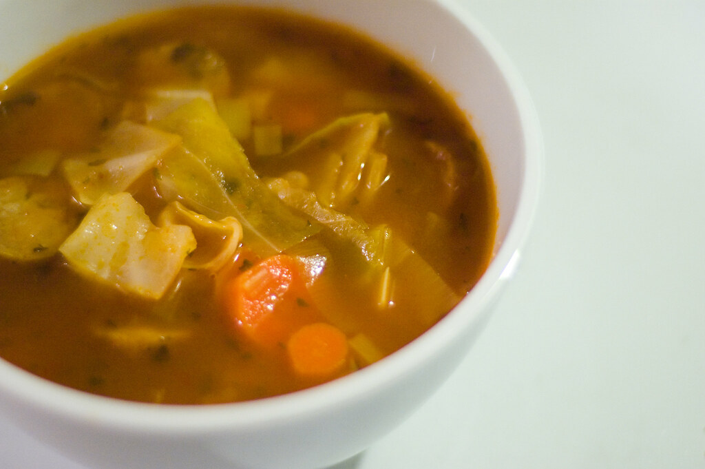

Home
Chicken Noodle Casserole

Description
It's so easy to make, and it only takes about an hour to make (35 minutes to cook)
This soup has a garlicky broth that is insanely comforting during the cold winter.
Ingredients
- 3 tablespoons olive oil
- 1/2 onion, chopped
- 2 cloves garlic, chopped
- 2 quarts water
- 4 teaspoon chicken bouillon granules
- 1 teaspoon salt, or to taste
- 1/2 teaspoon black pepper, or to taste
- 1/2 head cabbage, cored and coarsely chopped
- 1 (14.5 ounce) can Italitan-style stewed tomatoes, drained and diced
Steps
- Heat olive oil in a large stockpot over medium heat. Stir in onion and garlic;
cook until onion has softened, about 5 minutes.
- Stir in water, bouillon, salt, and pepper. Bring to a boil, then stir in cabbage.
Simmer until cabbage wilts, about 10 minutes. Stir in water, bouillon, salt, and pepper.
Bring to a boil, then stir in cabbage. Simmer until cabbage wilts, about 10 minutes.
- Stir in tomatoes. Return to a boil, then simmer 15 to 30 minutes, stirring often.
- Serve hot and enjoy!